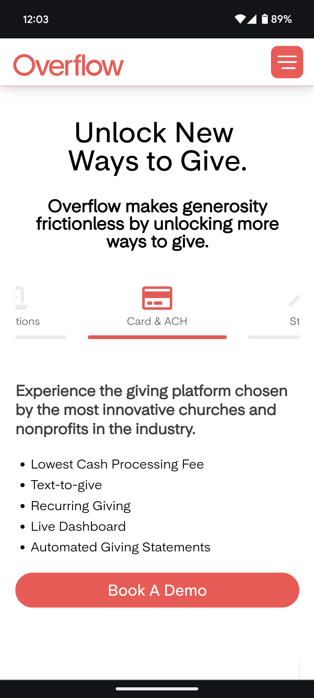

Repitition
This website uses repitition very effectively in how it uses the same color palette throughout the website as well as in the images of the product.
Proximity
This website uses proximity effectively, grouping the most important points into categories with an image that relates.
Alignment
This website uses alignment to show you the most important information quickly and easily. The categories are aligned in a carousel, where you can see the edges of the items before and after it, encouraging you to quickly view the different aspects of the website on mobile.
